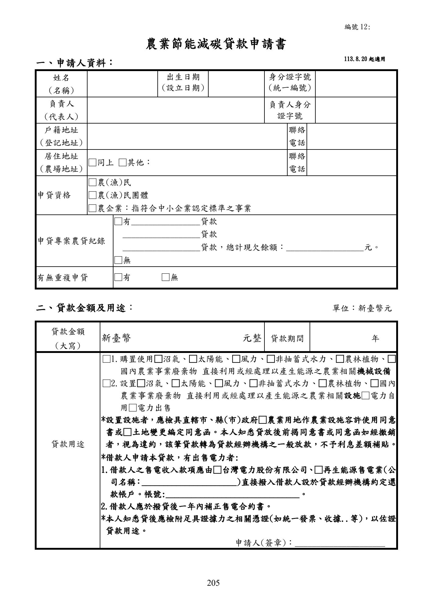
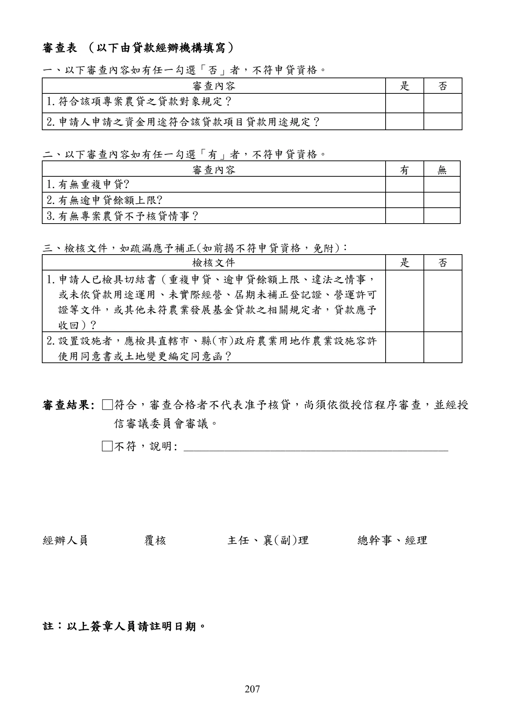

農業節能減碳貸款
本頁忠實呈現原文，不提供資格摘要、額度摘要、利率摘要或核貸判斷。
手冊頁：203 PDF頁：205／359
農業節能減碳貸款要點 中華民國 98 年 3 月 23 日行政院農業委員會農金字第 0985080123 號令訂定 中華民國 102 年 4 月 26 日行政院農業委員會農金字第 1025080178 號令修正 中華民國 103 年 10 月 28 日行政院農業委員會農金字第 1035084021 號令修正 中華民國 105 年 3 月 18 日行政院農業委員會農金字第 1055084021L 號令修正第 9 點，並 自 105 年 3 月 22 日生效 中華民國 105 年 5 月 23 日行政院農業委員會農金字第 1055084209A 號令修正第 10 點， 並自 105 年 5 月 23 日生效 中華民國 105 年 10 月 7 日行政院農業委員會農金字第 1055084421A 號令修正部分規定， 並自 105 年 10 月 12 日生效 中華民國 113 年 8 月 19 日農業部農授金字第 1137467070 號令修正部分規定，並自 113 年 8 月 20 日生效 一、 農業部(以下簡稱本部)為鼓勵使用具節能減碳效益之農業生產機械設備 ， 特訂定本要 點。 二、 農業節能減碳貸款除依辦理政策性農業專案貸款辦法辦理外 ， 依本要點規定辦理 。 本 要點未規定者，依農業發展基金貸款作業規範及其他有關規定辦理。 三、 本貸款之對象為農（漁）民、農（漁）民團體及農企業。 前項所稱農企業，指符合中小企業認定標準之事業。 四、 本貸款之用途如下： (一)購置使用沼氣、太陽能、風力、非抽蓄式水力、農林植物、國內農業事業廢棄物 直接利用或經處理以產生能源之農業相關機械設備。 (二)設置沼氣、太陽能、風力、非抽蓄式水力、農林植物、國內農業事業廢棄物直接 利用或經處理以產生能源之農業相關設施。 前項第二款設置設施者 ， 應檢具直轄市 、 縣(市)政府農業用地作農業設施容許使用同 意書或土地變更編定同意函。 五、 本貸款之經辦機構如下： (一) 設有信用部之農（漁）會。 (二) 依法承受農（漁）會信用部之銀行當地分行。 (三) 全國農業金庫。 前項第一款貸款經辦機構不得以內部融資或交互授信方式辦理本貸款。 前項所稱交互授信，指申貸農(漁)會與經辦農(漁)會有下列情形之一者： (一) 申貸農(漁)會貸予經辦農(漁)會本貸款，而經辦農(漁)會於尚未清償前，對申 貸農(漁)會貸予本貸款。 (二) 申貸農(漁)會對經辦農(漁)會以外之他農(漁)會貸予本貸款，該他農(漁)會又 對經辦農(漁)會貸予本貸款，而經辦農(漁)會於前開貸款尚未清償前，對申貸 農(漁)會貸予本貸款。 (三) 四家以上農(漁)會間有前款接續貸款之情形。 農(漁)民團體或農企業向第一項第一款或第二款貸款經辦機構申請本貸款者 ， 應於其 主事務所、分事務所或工廠登記所在直轄市、縣(市)轄區內之貸款經辦機構申辦。
查看PDF原始文字層
農業節能減碳貸款要點 中華民國 98 年 3 月 23 日行政院農業委員會農金字第 0985080123 號令訂定 中華民國 102 年 4 月 26 日行政院農業委員會農金字第 1025080178 號令修正 中華民國 103 年 10 月 28 日行政院農業委員會農金字第 1035084021 號令修正 中華民國 105 年 3 月 18 日行政院農業委員會農金字第 1055084021L 號令修正第 9 點，並 自 105 年 3 月 22 日生效 中華民國 105 年 5 月 23 日行政院農業委員會農金字第 1055084209A 號令修正第 10 點， 並自 105 年 5 月 23 日生效 中華民國 105 年 10 月 7 日行政院農業委員會農金字第 1055084421A 號令修正部分規定， 並自 105 年 10 月 12 日生效 中華民國 113 年 8 月 19 日農業部農授金字第 1137467070 號令修正部分規定，並自 113 年 8 月 20 日生效 一、 農業部(以下簡稱本部)為鼓勵使用具節能減碳效益之農業生產機械設備 ， 特訂定本要 點。 二、 農業節能減碳貸款除依辦理政策性農業專案貸款辦法辦理外 ， 依本要點規定辦理 。 本 要點未規定者，依農業發展基金貸款作業規範及其他有關規定辦理。 三、 本貸款之對象為農（漁）民、農（漁）民團體及農企業。 前項所稱農企業，指符合中小企業認定標準之事業。 四、 本貸款之用途如下： (一)購置使用沼氣、太陽能、風力、非抽蓄式水力、農林植物、國內農業事業廢棄物 直接利用或經處理以產生能源之農業相關機械設備。 (二)設置沼氣、太陽能、風力、非抽蓄式水力、農林植物、國內農業事業廢棄物直接 利用或經處理以產生能源之農業相關設施。 前項第二款設置設施者 ， 應檢具直轄市 、 縣(市)政府農業用地作農業設施容許使用同 意書或土地變更編定同意函。 五、 本貸款之經辦機構如下： (一) 設有信用部之農（漁）會。 (二) 依法承受農（漁）會信用部之銀行當地分行。 (三) 全國農業金庫。 前項第一款貸款經辦機構不得以內部融資或交互授信方式辦理本貸款。 前項所稱交互授信，指申貸農(漁)會與經辦農(漁)會有下列情形之一者： (一) 申貸農(漁)會貸予經辦農(漁)會本貸款，而經辦農(漁)會於尚未清償前，對申 貸農(漁)會貸予本貸款。 (二) 申貸農(漁)會對經辦農(漁)會以外之他農(漁)會貸予本貸款，該他農(漁)會又 對經辦農(漁)會貸予本貸款，而經辦農(漁)會於前開貸款尚未清償前，對申貸 農(漁)會貸予本貸款。 (三) 四家以上農(漁)會間有前款接續貸款之情形。 農(漁)民團體或農企業向第一項第一款或第二款貸款經辦機構申請本貸款者 ， 應於其 主事務所、分事務所或工廠登記所在直轄市、縣(市)轄區內之貸款經辦機構申辦。
手冊頁：204 PDF頁：206／359
六、 本貸款之輔導機關為本部及所屬農業試驗改良場(所)、直轄市及各縣(市)政府。 七、 本貸款由貸款經辦機構提供貸款資金 ， 並由農業發展基金就其出資金給予利息差額補 貼。 八、 本貸款風險由貸款經辦機構負擔。 九、 本貸款利率依辦理政策性農業專案貸款辦法相關規定辦理。 十、 本貸款之期限由貸款經辦機構依貸款額度及購置設備耐用年限覈實貸放 ， 最長為十年。 但購置之設備 ，本部另定有耐用年限超過十年者 ， 其貸款期限得由貸款經辦機構於耐 用年限內覈實貸放。 十一、 本貸款每一借款人最高貸款額度為新臺幣三千萬元 ， 並以實際所需金額百分之九十 為限。 有特殊情形，報經本部專案同意者，其最高貸款額度不受前項之限制。 十二、 本貸款由貸款經辦機構按核定所需金額一次或分次撥入借款人帳戶。 本貸款資金應於貸款核准後三個月內第一次動撥 ， 並依工程進度於二年內動撥完畢。 但借款人確有困難，若工程未能於二年內完成者，得向貸款經辦機構申請延長動撥 期限，最長一年，並以一次為限。 十三、 本貸款之償還方式，由借貸雙方約定之。但本金應每期平均攤還，利息隨同繳付， 每期最長不得超過半年。 前項本金得訂定寬緩期，最長不得超過三年。 十四、 (刪除) 十五、 本貸款之擔保方式由貸款經辦機構依其授信有關規定，審酌個別授信案件核定。借 款人擔保能力不足者，由貸款經辦機構協助送請農業信用保證機構保證。 十六、 貸款經辦機構應於撥貸後六個月內辦理貸款用途之查驗工作且作成紀錄 ， 並應向借 款人徵提由國內(外)農業生產機械設備廠商所出具足堪認定其貸款用途及支付金 額之相關憑證；其後貸款存續期間，每年應至少辦理一次經營狀況查驗並作成書面 紀錄。 十七、 借款人申請本貸款有出售電力者，借款人之售電收入款項，應由台灣電力股份有限 公司或其他再生能源售電業直接撥入借款人與貸款經辦機構約定之還款帳戶 ， 並於 撥貸後一年內補正售電合約書。
查看PDF原始文字層
六、 本貸款之輔導機關為本部及所屬農業試驗改良場(所)、直轄市及各縣(市)政府。 七、 本貸款由貸款經辦機構提供貸款資金 ， 並由農業發展基金就其出資金給予利息差額補 貼。 八、 本貸款風險由貸款經辦機構負擔。 九、 本貸款利率依辦理政策性農業專案貸款辦法相關規定辦理。 十、 本貸款之期限由貸款經辦機構依貸款額度及購置設備耐用年限覈實貸放 ， 最長為十年。 但購置之設備 ，本部另定有耐用年限超過十年者 ， 其貸款期限得由貸款經辦機構於耐 用年限內覈實貸放。 十一、 本貸款每一借款人最高貸款額度為新臺幣三千萬元 ， 並以實際所需金額百分之九十 為限。 有特殊情形，報經本部專案同意者，其最高貸款額度不受前項之限制。 十二、 本貸款由貸款經辦機構按核定所需金額一次或分次撥入借款人帳戶。 本貸款資金應於貸款核准後三個月內第一次動撥 ， 並依工程進度於二年內動撥完畢。 但借款人確有困難，若工程未能於二年內完成者，得向貸款經辦機構申請延長動撥 期限，最長一年，並以一次為限。 十三、 本貸款之償還方式，由借貸雙方約定之。但本金應每期平均攤還，利息隨同繳付， 每期最長不得超過半年。 前項本金得訂定寬緩期，最長不得超過三年。 十四、 (刪除) 十五、 本貸款之擔保方式由貸款經辦機構依其授信有關規定，審酌個別授信案件核定。借 款人擔保能力不足者，由貸款經辦機構協助送請農業信用保證機構保證。 十六、 貸款經辦機構應於撥貸後六個月內辦理貸款用途之查驗工作且作成紀錄 ， 並應向借 款人徵提由國內(外)農業生產機械設備廠商所出具足堪認定其貸款用途及支付金 額之相關憑證；其後貸款存續期間，每年應至少辦理一次經營狀況查驗並作成書面 紀錄。 十七、 借款人申請本貸款有出售電力者，借款人之售電收入款項，應由台灣電力股份有限 公司或其他再生能源售電業直接撥入借款人與貸款經辦機構約定之還款帳戶 ， 並於 撥貸後一年內補正售電合約書。
手冊頁：205 PDF頁：207／359
{kind=link}

展開查看PDF原始文字層
農業節能減碳貸款申請書
一、申請人資料：
姓名
(名稱)
出生日期
(設立日期)
身分證字號
(統一編號)
負責人
(代表人)
負責人身分
證字號
戶籍地址
(登記地址) 聯絡
電話
居住地址
(農場地址) □同上 □其他： 聯絡
電話
申貸資格
□農(漁)民
□農(漁)民團體
□農企業：指符合中小企業認定標準之事業
申貸專案農貸紀錄
□有________________貸款
__________________貸款
__________________貸款，總計現欠餘額：__________________元。
□無
有無重複申貸 □有 □無
二、貸款金額及用途： 單位：新臺幣元
貸款金額
(大寫)
新臺幣 元整 貸款期間 年
貸款用途
□1.購置使用□沼氣、□太陽能、□風力、□非抽蓄式水力、□農林植物、□
國內農業事業廢棄物 直接利用或經處理以產生能源之農業相關機械設備
□2.設置□沼氣、□太陽能、□風力、□非抽蓄式水力、□農林植物、□國內
農業事業廢棄物 直接利用或經處理以產生能源之農業 相關設施□電力自
用□電力出售
*設置設施者，應檢具直轄市、縣(市)政府□農業用地作農業設施容許使用同意
書或□土地變更編定同意函。本人知悉貸放後前揭同意書或同意函如經撤銷
者，視為違約，該筆貸款轉為貸款經辦機構之一般放款，不予利息差額補貼。
*借款人申請本貸款，有出售電力者:
1.借款人之售電收入款項應由□台灣電力股份有限公司、□再生能源售電業(公
司名稱 ：______________________)直接撥入借款人設於貸款經辦機構約定還
款帳戶。帳號:_______________________________。
2.借款人應於撥貸後一年內補正售電合約書。
*本人知悉貸後應檢附足具證據力之相關憑證(如統一發票、收據..等)，以佐證
貸款用途。
申請人(簽章)：_____________________
113.8.20 起適用
編號 12:手冊頁：206 PDF頁：208／359
敬請 惠予核貸為荷 此致 貸款經辦機構 申請人(簽章)：__________________________ 中 華 民 國 年 月 日 備註：其他徵授信資料請依貸款經辦機構相關規定辦理
查看PDF原始文字層
敬請 惠予核貸為荷 此致 貸款經辦機構 申請人(簽章)：__________________________ 中 華 民 國 年 月 日 備註：其他徵授信資料請依貸款經辦機構相關規定辦理
手冊頁：207 PDF頁：209／359
{kind=link}

展開查看PDF原始文字層
審查表 （以下由貸款經辦機構填寫） 一、以下審查內容如有任一勾選「否」者，不符申貸資格。 審查內容 是 否 1.符合該項專案農貸之貸款對象規定？ 2.申請人申請之資金用途符合該貸款項目貸款用途規定？ 二、以下審查內容如有任一勾選「有」者，不符申貸資格。 審查內容 有 無 1.有無重複申貸? 2.有無逾申貸餘額上限? 3.有無專案農貸不予核貸情事？ 三、檢核文件，如疏漏應予補正(如前揭不符申貸資格，免附)： 檢核文件 是 否 1.申請人已檢具切結書（重複申貸、逾申貸餘額上限、違法之情事， 或未依貸款用途運用、未實際經營、屆期未補正登記證、營運許可 證等文件，或其他未符農業發展基金貸款之相關規定者，貸款應予 收回）? 2.設置設施者，應檢具直轄市、縣(市)政府農業用地作農業設施容許 使用同意書或土地變更編定同意函？ 審查結果: □符合，審查合格者不代表准予核貸，尚須依徵授信程序審查，並經授 信審議委員會審議。 □不符，說明: ____________________________________________________ 經辦人員 覆核 主任、襄(副)理 總幹事、經理 註：以上簽章人員請註明日期。
手冊頁：208 PDF頁：210／359
函令摘要：釋示「農業節能減碳貸款」要點第 17點規定所稱售電合約書 之簽約主體 【行政院農業委員會106年07月24日農授金字第1065084441號函】
主旨：有關「農業節能減碳貸款」要點第17點規定所稱售電合約書之簽約主體，請依說明 三辦理，請查照。 說明： 一、本貸款要點第17點規定，借款人申請本貸款有出售電力者，應於撥貸後一年內補正售 電合約書。合先敘明。 二、借款人所附相關文件，應與借款人名義相符，惟迭有外界反映，為應財政部 99年12 月10日台財稅字第09904544950號令規定 ， 自然人出售電力近6個月平均每月銷售額超 過8萬元者，應參照獨資組織之規定辦理營業登記。故有借款人為自然人，惟為應前 開課稅需求，致所取得之售電合約書為獨資組織名義之情況。 三、為應實務需求，且考量獨資組織之權利義務仍歸屬其負責人，本貸款之借款主體為自 然人者，所附售電合約得為該自然人或以該自然人為負責人之獨資組織名義，但不得 為公司或合夥組織名義。 函令摘要：所詢農民擬購置乙種建築用地上建築物之屋頂型太陽能光電 發電設備，得否申貸「農業節能減碳貸款」 【行政院農業委員會110年04月08日農授金字第1105084383號函】
主旨 ： 所詢農民擬購置乙種建築用地上建築物之屋頂型太陽能光電發電設備 ， 得否申貸 「農 業節能減碳貸款」案，復如說，請查照。 說明： 一、 依據本會農業金融局案陳貴會110年3月19日斗農信字第1100001897號函辦理。 二、 為確保綠能設施合法設置並結合農業經營 ， 依旨揭貸款要點第4點第2項規定 ， 農民設 置太陽能設施，應檢具本人名義之直轄市、縣 （市） 政府農業用地作農業設施容許使 用同意書。 三、 查 「申請農業用地作農業設施容許使用審查辦法」 第2條所稱之農業用地 ， 未包含 「乙 種建築用地」，爰農民將無法依規定取得上開容許使用證明。 四、 為配合政府綠能政策，本會已於110年3月1日推動「百億農業綠能貸款專案」，農民 如未符合 「農業節能減碳貸款」 資格條件者，其設置綠能設施之資金，得輔導其申貸 全國農業金庫之 「農業綠能設置貸款」 ，貸款額度最高不逾設(購)置綠能發電設施計 畫成本之9成，貸款利率目前為1.625%。
查看PDF原始文字層
函令摘要：釋示「農業節能減碳貸款」要點第 17點規定所稱售電合約書 之簽約主體 【行政院農業委員會106年07月24日農授金字第1065084441號函】 主旨：有關「農業節能減碳貸款」要點第17點規定所稱售電合約書之簽約主體，請依說明 三辦理，請查照。 說明： 一、本貸款要點第17點規定，借款人申請本貸款有出售電力者，應於撥貸後一年內補正售 電合約書。合先敘明。 二、借款人所附相關文件，應與借款人名義相符，惟迭有外界反映，為應財政部 99年12 月10日台財稅字第09904544950號令規定 ， 自然人出售電力近6個月平均每月銷售額超 過8萬元者，應參照獨資組織之規定辦理營業登記。故有借款人為自然人，惟為應前 開課稅需求，致所取得之售電合約書為獨資組織名義之情況。 三、為應實務需求，且考量獨資組織之權利義務仍歸屬其負責人，本貸款之借款主體為自 然人者，所附售電合約得為該自然人或以該自然人為負責人之獨資組織名義，但不得 為公司或合夥組織名義。 函令摘要：所詢農民擬購置乙種建築用地上建築物之屋頂型太陽能光電 發電設備，得否申貸「農業節能減碳貸款」 【行政院農業委員會110年04月08日農授金字第1105084383號函】 主旨 ： 所詢農民擬購置乙種建築用地上建築物之屋頂型太陽能光電發電設備 ， 得否申貸 「農 業節能減碳貸款」案，復如說，請查照。 說明： 一、 依據本會農業金融局案陳貴會110年3月19日斗農信字第1100001897號函辦理。 二、 為確保綠能設施合法設置並結合農業經營 ， 依旨揭貸款要點第4點第2項規定 ， 農民設 置太陽能設施，應檢具本人名義之直轄市、縣 （市） 政府農業用地作農業設施容許使 用同意書。 三、 查 「申請農業用地作農業設施容許使用審查辦法」 第2條所稱之農業用地 ， 未包含 「乙 種建築用地」，爰農民將無法依規定取得上開容許使用證明。 四、 為配合政府綠能政策，本會已於110年3月1日推動「百億農業綠能貸款專案」，農民 如未符合 「農業節能減碳貸款」 資格條件者，其設置綠能設施之資金，得輔導其申貸 全國農業金庫之 「農業綠能設置貸款」 ，貸款額度最高不逾設(購)置綠能發電設施計 畫成本之9成，貸款利率目前為1.625%。